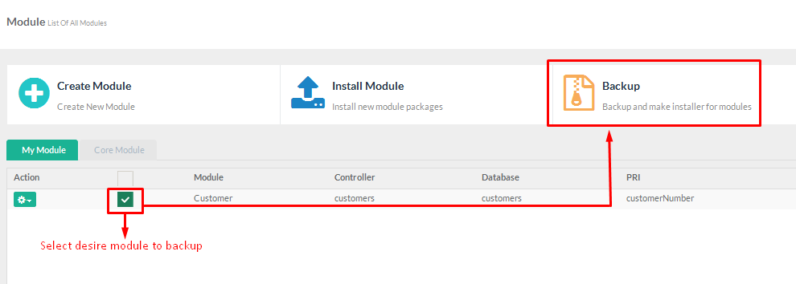

Sximo Builder PHP Web Application Generator
- created: 05/26/2014
- latest update: 09/16/2014
- by: Mangopik
- email: kangopik@gmail.com
Getting Started
Introducing, The Real framework environment to Build Backend Administrator & Frontend for real Internet / Intranet web application with a tons of additional cms plugin possibility.
SximoBuilder is a powerful automation tool that can generate a full set of PHP quickly from MySQL. You can instantly create web sites that allow users to view, edit, search, add and delete records on the web. SximoBuilder is designed for high flexibility, numerous options enable you to generate PHP applications that best suits your needs. The generated codes are clean, straightforward and easy-to-customize. SximoBuilder can save you tons of time and is suitable for both beginners and experienced develpers alike
Feature
Our experience with building application using PHP & MySQL more than 5 years making us know about minimal common feature and routine proccess.
Sximo Builder Integrated module & Function
|
Sximo Builder CRUD Generator
|
Form Features
|
Upgrade direction:
- update "ROOT/setting.php" with additional new parameter for:
- native code igniter captcha
- multi language - social network login - since this framework using codeigniter version 3.0, you should replace ROOT/system with code igniter version 3.0
- replace "ROOT/application" with new sximo for codeigniter v 1.3 (important: if you make change on core files, make sure you backup first)
- replace "ROOT/sximo"
- add "ROOT/uploads" directory
Troubleshoot
troubleshoot: if you have problem with recaptcha, you can now change alternate captcha with native code igniter captcha
Version 3.2 Changelog ( 26 May 2016)
- Enhanchement: new template layout
- Enhanchement: Multiple master detail
- Enhanchement: Subform / extend form
- Enhanchement: new template layout
- Enhanchement: Formater Date
- Enhanchement: Formater images
- Enhanchement: Formater link
- Enhanchement: Checkbox/Radio
Version 3.0 Changelog
- Enhanchement: upgrade to codeigniter version 3.0
- Enhanchement: add setting parameter for native codeigniter capthca ( issue #36 )
- Enhanchement: add setting parameter for social network login ( issue #1 )
- Enhanchement: add setting parameter for multi language ( issue #2 )
- Enhanchement: add Multi Language module ( issue #2 )
- Enhanchement: add Blog Module, Blog Comment Module, Blog Category Module
- Enhanchement: add Installer Module
- Enhanchement: add Backup Module
- Fixed: removing 'echo' as prefix in $this->load->view syntax in index, view template file (issue #38 )
Server & PHP Requirment
To make Sximo Builder running on your , you need to make sure your server match with minimum requirment
- Apache, nginx, or another compatible web server.
- PHP 5.2.x >> Higher
- MySQL Database server
- Module Re_write server
- PHP_CURL Module Enable
- Realtime Internet Connection ( Module Management )
Installation
Preparing Installation
- Download ZIP package and unzip it.
- In unzipped folder you will find folder directory like bellow.
- source
- database
- documentation
- Create app directory on your web directory server
- Simply put all files inside directory
sourceto your app folder.
Create new database installation
You need to create new database , you can use phpmyadmin or any mysql databse tools such maestro , sqlyog etc
---
After new database created , now import database/database.sql file into your new database
Configuration Installation
1. Open application/config/config.php file using your favorite php editor
2. Setting Url And Licence
$config['base_url'] = ''http://127.0.0.1/yourapp';
3. Setting Database Info
Openapplication/config/database.php file using your favorite php editor
$db['default']['hostname'] = 'localhost'; $db['default']['username'] = 'dbuser'; $db['default']['password'] = 'dbpassword'; $db['default']['database'] = 'dbname'; $db['default']['dbdriver'] = 'mysqli';
4. Access your application
- Now access your application via your favorite browser
http://127.0.0.1/myapp - Default Login :
Email Address :superadmin@mail.com
Password :password - Awesome your application is ready now !
Setting Up Application
After your successfull install your application , now you need to setting your app .
Log to your application and go to :
Go to : Control Panel -> Setting
General Setting
Email Template
Page CMS(Static Page)
Page CMS allow you to create page for frontend ( Public ) or Private. This can be put for creating , contact , about us , service , TOC etc
Before you begin creating pages , you have to know that SXIMO create file everytime you create pages , its mean you have full control to insert everything in content such tag php , css , exclude javscript
Go to : Control Panel -> Page CMS
Bootstrap Element
We'are really recomended that you learning twitter bootstrap css framework to use page editor . Sximo fully supported to use all bootstrap html and css syntac , all elements from bootsrap can be use to design your own page.Breadcrumb Code HTML
Frontend
<div class="wrapper-header ">
<div class=" container">
<div class="col-sm-6 col-xs-6">
<div class="page-title">
<h3> About Us <small> Who We Are ?</small></h3>
</div>
</div>
<div class="col-sm-6 col-xs-6 ">
<ul class="breadcrumb pull-right">
<li><a href="<?php echo site_url('') ?>">Home</a></li>
<li class="active">About Us </li>
</ul>
</div>
</div>
</div>
Backend
<div class="page-content row">
<!-- Page header -->
<div class="page-header">
<div class="page-title">
<h3> Title <small> Tag Line </small></h3>
</div>
<ul class="breadcrumb">
<li><a href="<?php site_url('dashboard') ?>"> Dashboard</a></li>
<li class="active">Title </li>
</ul>
</div>
<div class="page-content-wrapper">
---- Content page here ---
</div>
</div>
Modules
What's Module ? A module is a part of a app. A module contain one or several routines that we call CRUDSD ( Create Read Update Delete Search and Download ). By default at the first time you create module , system will generate thoose routines. Except if your database table doesnt contain primary key, it only create routins View, Search and Download.there are 2 different module : CORE and Installed Module
Core Module
This is built in modules, come with default distribution. Please Do not updates thooss module, because thoose module already have customizion, but if you know how it's work, then it's up to you. with your own risk ;)Custom ( Installed ) Module
This is your module list, every time you create module, it will shown up at installed tab. Let's create your first moduleCreate New Module
Before you create module , you have to create table for module you will build . this app doest have feature to create table database , so you need phpmyadmin or other mysql tools for creating table
Go to : Control Panel -> Code Builder

PLEASE NOTE
Module CRUD required PRIMAY TABLE WITH AUTOINCREAMENT
- Module Name / Title : Customers
- Class Controller : customers.
- Table Master : customers.
- Module Note : View All Customer Data
- Select SQL statement: Check Auto SQL
- Click Button " Create Module "
From list installed module, click button gear dropdown and click view module. You should see you module grid with complete function !. YOU'RE AWESOME!! creating module in one step less than a minutes
Edit Current Module
Go to : Control Panel -> Code Builder -> Your module -> Click button gear -> Edit
From list installed module , click button gear dropdown and click Edit module. Then you should able to see edit form and following tabs INFO , SQL , TABLE , FORM , MASTER DETAIL ,PERMISSION , REBUILDInstall New Module
This feature use for new plugin you created or sximo plugin from envanto
Backup Current Module
Backup your precious module u've created with checkedbox the click Backup

All module zipped are stored at uploads/zip folder
MySQL Editor
At the first time you create module, system will create automatic single query table
Why SXIMO BUILDER Creating automatic " WHERE employee.EmployeeId IS NOT NULL " ? this is for prevent error when users submit search form.Every fields included on query select, will be displaying at grid table including fields from join table. so make sure every field you want to show on table grid and view detail, must be on your query statement
Everytime you made changes with SQL editor , you have to rebuild Model Files
Working with join Query ( Displaying 2 or more table )
Example Join Query
SELECT customer.*,tb_users.* FROM customer LEFT JOIN tb_users ON customer.staffid = tb_users.id
If we using above statment , Grid table will automatically dispaying all SELECT statment from2 tables.
Keep in your mind , althought we can displaying table grid form 2 or more table , form , insert , edit and remove operation only affected for 1 table ( primary table )
Grid/Table
By Default , after build new module , grid will displaying all field into table
You can control Field to show ( table grid ) , view detail ( view detail page ) , sortable ( allow users to sort order by field ) , download ( include field to be downloadable )
Displaying row as image
system does not store images on database, but the images are stored as a file at some directory. So make sure you create directory at uploads/your_directory_name. from image columns checkbox, checked form and put directory path uploads/your_directory_nameDisplay As ( Aliasing )
If you're not familiar with mysql syntax or getting lazzy to write query, then this feature is your solution Example, you have field user_id on your table and you want to connect with tb_users and displaying username or firstname on your grid and view detailAfter You save display as, this will automatically work on grid table, but not for view detail. to take affect view detail, you need to rebuild View.blade.php
Form editor
Form is the most important feature from CRUD activity . Form only can work on single table , this mean you only can manage operation such insert and update into one table at the same time. At this moment , system only able to work with , Hiddem Form , Text Form , Date Form , Date Time , Select , Checkbox , Radio
Hidden
Hidden type is used for Primary Key with autoincreament
The important thing from the form is your table Must have field type auto increament. this will be KEY for insert or update row table. Now for auto increament field , you must make type form HIDDEN , NO REQUIRED and SHOW.
Text
Text type is used for collecting text or number from users
Date
Date type is used for collecting date input , the input will have popup datepicker to make sure user input right type of date . Your field table must be set as date field ( Y-m-d )
Date Time
Datetime type is used for collecting date+time input , the input will have popup datepickertime to make sure user input right type of date . Your field table must be set as date field ( Y-m-d H:i:s )
Textarea
Text type is used for collecting long text or number from users
Textarea with Editor
Text type is used for collecting long text or number from users with editor
Select
Select LookupSelect Custom Value
Select Multiple Custom Value
Select Lookup Cascade ( parent filter )
Radio
Checkbox
Upload ( File / Images )
Upload type is used for collecting image or file from users . All files and images stored at spesific folder
So make sure you create directory at uploads/your_directory_name
Permission
Every CRUD module will have a couples function such view grid , add , edit etc . you can control wich group are able to access thoose function
Limit users only view they own record This feature requiredentry_by (int 6) field table, if you alredy having this field on your table , then just uncheck global column , if not , then you have to add new field on primary table
Rebuild
By default at the first time you create module, system will generate files such controller , model , index, form and view . Ofcourse when application in development mode , there're possibility you made some changes from table , form grid etc. We try to cover this possibility by adding rebuild modules features
Database table syncronize
Next, when you have current module with table A then you alter table,( insert or delete fields from current database ), this will make module errorGo to : Control Panel -> Code Builder -> Your module -> Click button gear -> SQL
RE-Save your SQL stament , the system will collect new information from your table fields . Once you done , then you have to rebuild files Model , View and Form
Rebuild Form
After you made changes for setting/design you have to rebuild form files
Rebuild View Detail
After you made changes at table settting for view detail you have to rebuild view files
Rebuild Grid Table and controller
Little posibility to rebuild controller and index table, since we design controller and index table works automatic reading realtime module configuration . so when you need to rebuild both controller and index table ? Usualy when you updrade version
Languages
Register your own language ? .
Follow following step bellow
Go to : Control Panel -> setting : then click menu translation
Add new translation just click the blue button on left side
pop modal will show and you can add language u desire
Edit file info.json and change information according to your new language Start to translate every words/pharse at file core_lang.php and all file inside your folder language you created
Done Wohooo!!
Source and credit
Codeigniter - Sximo Builder is using following plugins